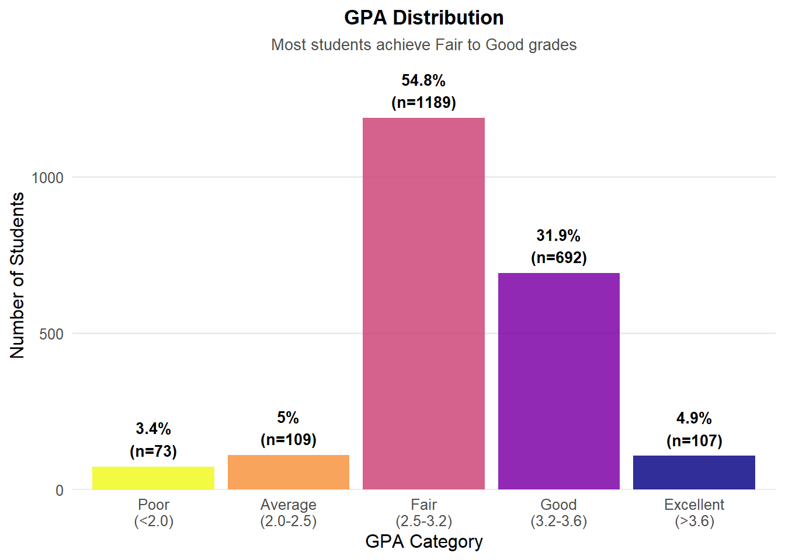
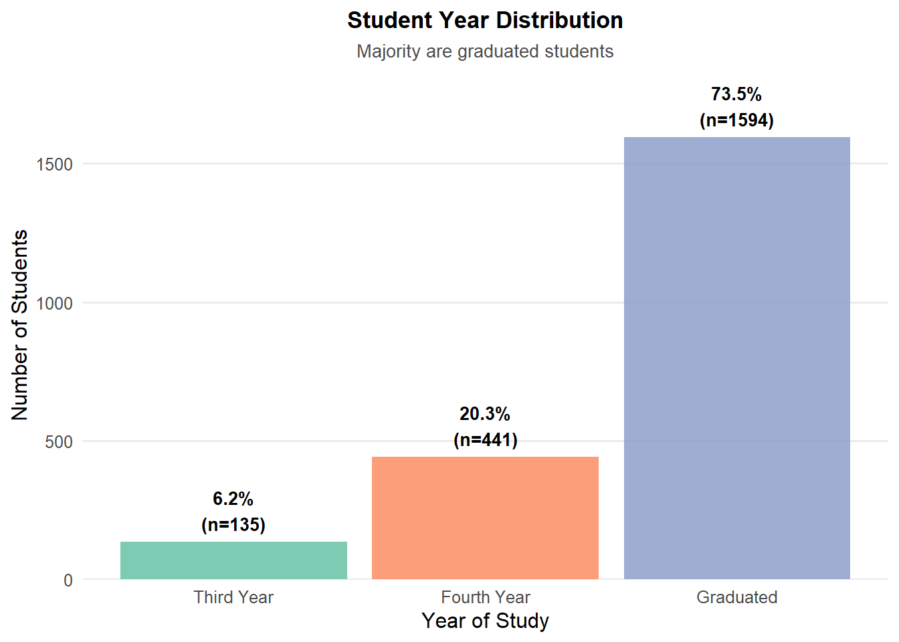
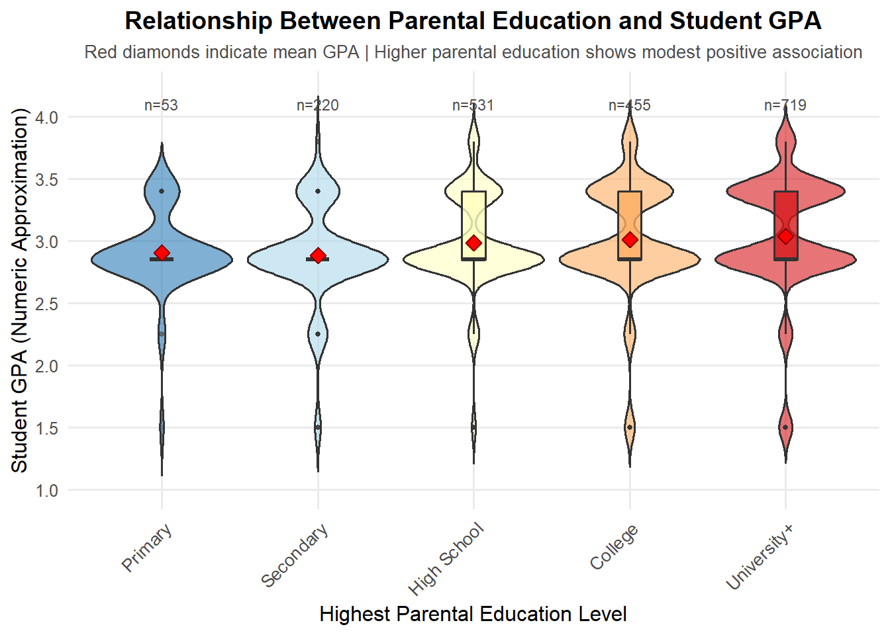
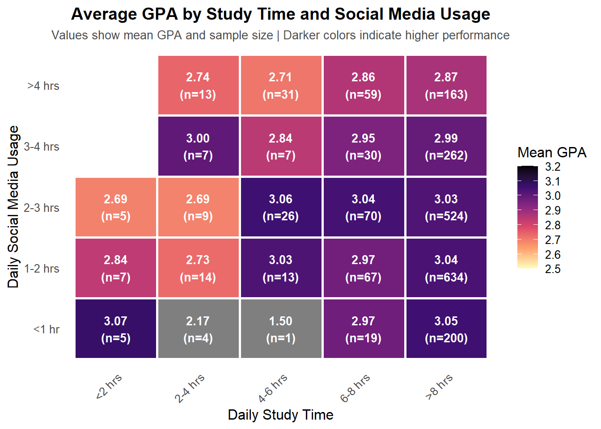
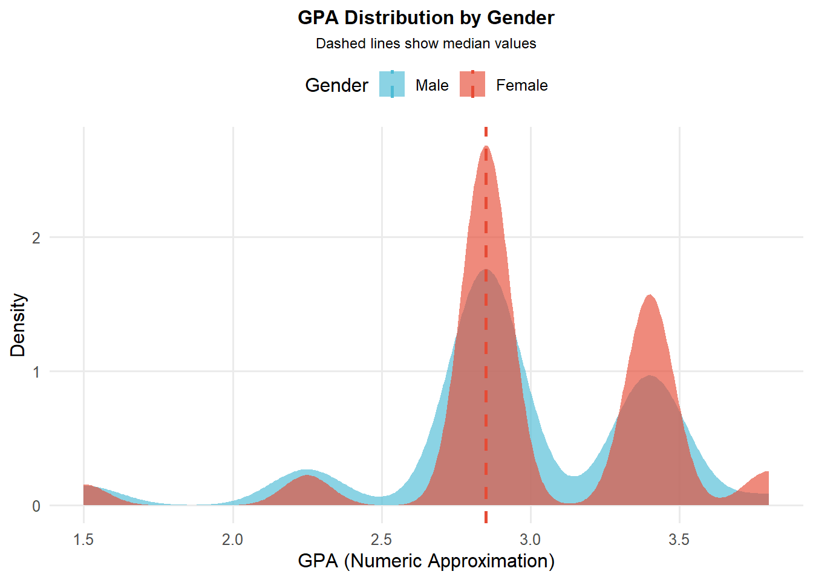
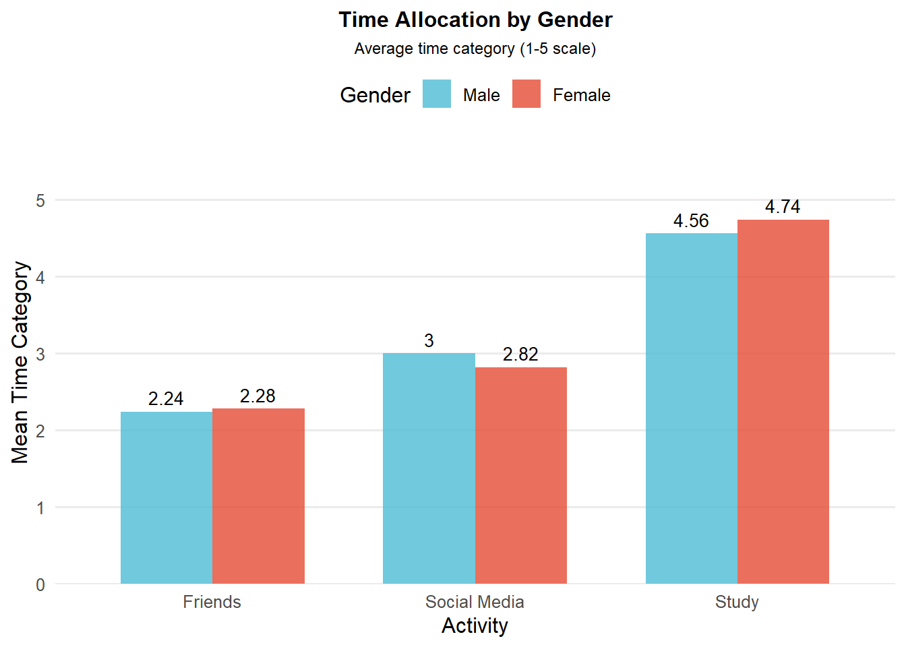
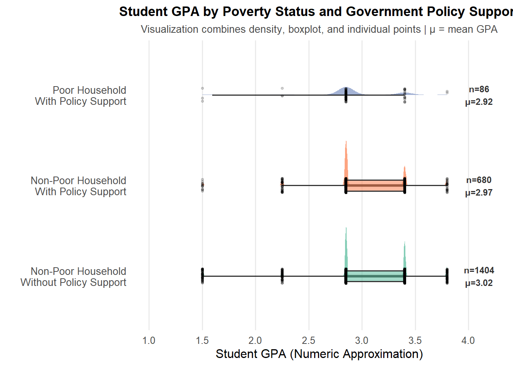
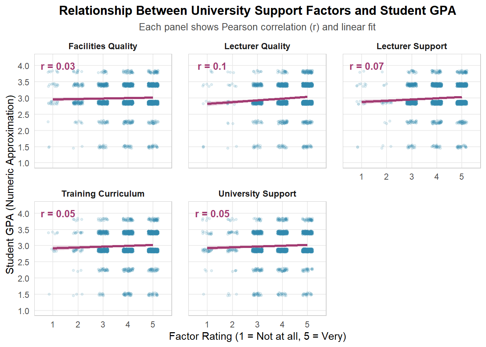
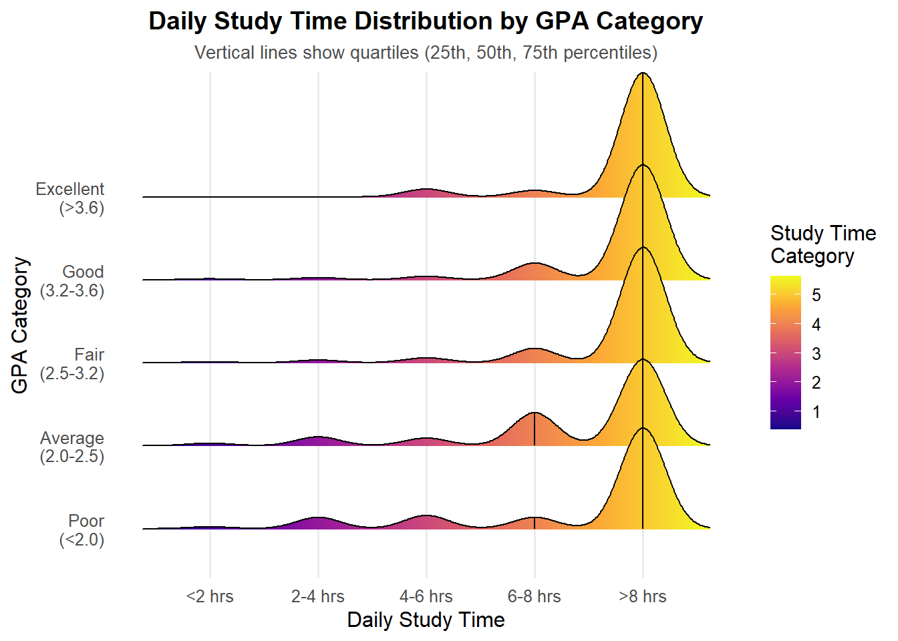

pacman::p_load(tidyverse)Take-home Exercise 1
Getting Started
The code chunks below prepare the R environment for data analysis and visualization. The p_load() function from the pacman package checks if packages are installed and loads them automatically. The tidyverse package provides essential tools for data manipulation and visualization, while readxl is used to import the Excel file “Database paper.xlsx” containing survey data from 2,170 students. Additional visualization packages are loaded including ggdist for distribution plots, ggridges for ridgeline plots, ggthemes for professional themes, and colorspace for color palette management. These packages enable the creation of advanced, publication-ready visualizations.
library(readxl)
student_data <- read_excel("Database paper.xlsx")pacman::p_load(ggdist, ggridges, ggthemes,
colorspace, tidyverse)Data Quality Check
The code chunk below performs essential data quality checks on the imported dataset. The duplicated() function identifies any duplicate rows in the data, while colSums(is.na()) checks for missing values (NA) in each column. The cat() and print() functions display the results in a readable format. Finally, nrow(), ncol(), and complete.cases() provide a summary of the dataset dimensions and completeness. These checks ensure data integrity before proceeding with analysis, revealing that the dataset contains 2,170 observations with 22 variables and has no duplicates or missing values.
duplicates <- student_data[duplicated(student_data), ]
cat("Number of duplicate rows:", nrow(duplicates), "\n\n")Number of duplicate rows: 226 missing_summary <- colSums(is.na(student_data))
cat("Missing values per column:\n")Missing values per column:print(missing_summary) Year Gender Policy_Stu Minority_Stu
0 0 0 0
Poor_Stu Father_Edu Mother_Edu Father_Occupation
0 0 0 0
Mother_Occupation Time_Friends Time_SocicalMedia Time_Studying
0 0 0 0
GPA Adapt_Learning_Uni Study_Methods SupportOf_Uni
0 0 0 0
SupportOf_Lec Facilitie_Uni Quality_Lecturer TrainingCurriculum
0 0 0 0
Competitive_Class InfuenceF_Friends
0 0 cat("\n=== Data Quality Summary ===\n")
=== Data Quality Summary ===cat("Total observations:", nrow(student_data), "\n")Total observations: 2170 cat("Total variables:", ncol(student_data), "\n")Total variables: 22 cat("Complete cases:", sum(complete.cases(student_data)), "\n")Complete cases: 2170 Data Transformation
The code chunk below transforms the raw numeric codes into meaningful factor labels for better interpretation and visualization. The mutate() function from dplyr creates new labeled variables based on the survey codebook. Key transformations include converting demographic variables (Year, Gender) into descriptive labels, creating labeled factors for socioeconomic indicators (policy support, minority status, poverty), labeling parental education and time allocation categories with readable text, and creating a numeric GPA approximation using midpoint values for each category range. Additionally, derived variables are created including a combined parental education variable (taking the maximum of both parents’ education levels), a disadvantaged background indicator, and a university support composite score averaging five institutional factors. The summary() function provides descriptive statistics to verify the transformations.
student_final <- student_data %>%
mutate(
# Demographics
Year_Label = factor(Year, levels = 3:5,
labels = c("Third Year", "Fourth Year", "Graduated")),
Gender_Label = factor(Gender, levels = 1:2,
labels = c("Male", "Female")),
# Socioeconomic status
Policy_Label = factor(Policy_Stu, levels = 1:2,
labels = c("Yes", "No")),
Minority_Label = factor(Minority_Stu, levels = 1:2,
labels = c("Yes", "No")),
Poor_Label = factor(Poor_Stu, levels = 1:2,
labels = c("Yes", "No")),
# Parental Education
Father_Edu_Label = factor(Father_Edu, levels = 1:6,
labels = c("Primary", "Secondary", "High School",
"College", "University+", "Other")),
Mother_Edu_Label = factor(Mother_Edu, levels = 1:6,
labels = c("Primary", "Secondary", "High School",
"College", "University+", "Other")),
# Time allocation
Time_Friends_Label = factor(Time_Friends, levels = 1:5,
labels = c("<1 hr", "1-2 hrs", "2-3 hrs",
"3-4 hrs", ">4 hrs")),
Time_Social_Label = factor(Time_SocicalMedia, levels = 1:5,
labels = c("<1 hr", "1-2 hrs", "2-3 hrs",
"3-4 hrs", ">4 hrs")),
Time_Study_Label = factor(Time_Studying, levels = 1:5,
labels = c("<2 hrs", "2-4 hrs", "4-6 hrs",
"6-8 hrs", ">8 hrs")),
# GPA categories
GPA_Label = factor(GPA, levels = 1:5,
labels = c("Poor\n(<2.0)", "Average\n(2.0-2.5)",
"Fair\n(2.5-3.2)", "Good\n(3.2-3.6)",
"Excellent\n(>3.6)")),
# Create GPA numeric midpoint for analyses
GPA_Numeric = case_when(
GPA == 1 ~ 1.5, # Poor: <2.0
GPA == 2 ~ 2.25, # Average: 2.0-2.5
GPA == 3 ~ 2.85, # Fair: 2.5-3.2
GPA == 4 ~ 3.4, # Good: 3.2-3.6
GPA == 5 ~ 3.8, # Excellent: >3.6
TRUE ~ NA_real_
),
# Combined parental education (highest level)
Parent_Edu_Max = pmax(Father_Edu, Mother_Edu, na.rm = TRUE),
Parent_Edu_Max_Label = factor(Parent_Edu_Max, levels = 1:6,
labels = c("Primary", "Secondary", "High School",
"College", "University+", "Other")),
# Disadvantaged background indicator
Disadvantaged = case_when(
Poor_Stu == 1 | Minority_Stu == 1 ~ "Disadvantaged",
TRUE ~ "Not Disadvantaged"
),
# University support composite score
Uni_Support_Score = (SupportOf_Uni + SupportOf_Lec + Facilitie_Uni +
Quality_Lecturer + TrainingCurriculum) / 5
)
# Display summary statistics
summary(student_final %>% select(Year, Gender, GPA, Time_Studying,
Father_Edu, Mother_Edu, Uni_Support_Score)) Year Gender GPA Time_Studying Father_Edu
Min. :3.000 Min. :1.000 Min. :1.0 Min. :1.000 Min. :1.000
1st Qu.:4.000 1st Qu.:2.000 1st Qu.:3.0 1st Qu.:5.000 1st Qu.:3.000
Median :5.000 Median :2.000 Median :3.0 Median :5.000 Median :4.000
Mean :4.672 Mean :1.889 Mean :3.3 Mean :4.719 Mean :3.747
3rd Qu.:5.000 3rd Qu.:2.000 3rd Qu.:4.0 3rd Qu.:5.000 3rd Qu.:5.000
Max. :5.000 Max. :2.000 Max. :5.0 Max. :5.000 Max. :6.000
Mother_Edu Uni_Support_Score
Min. :1.000 Min. :1.000
1st Qu.:3.000 1st Qu.:3.600
Median :4.000 Median :4.200
Mean :3.664 Mean :4.143
3rd Qu.:5.000 3rd Qu.:4.800
Max. :6.000 Max. :5.000 Visualization 1: GPA and Year Distribution
The code chunk below creates two bar plots to visualize the distribution of students across GPA categories and year levels. The group_by() and summarise() functions calculate the count and percentage of students in each category. The geom_bar() function creates the bars with stat = "identity" to use the calculated values, while geom_text() adds percentage and count labels above each bar. The scale_fill_viridis_d() function applies a colorblind-friendly “plasma” color palette to the GPA plot, and scale_fill_brewer() uses the “Set2” palette for the year distribution. The scale_y_continuous() with expansion() ensures labels aren’t cut off at the top. Both plots use theme_minimal() for a clean appearance with customized theme elements to center titles, remove unnecessary grid lines, and hide legends since colors are self-explanatory.
p1 <- student_final %>%
group_by(GPA_Label) %>%
summarise(Count = n(),
Percentage = n() / nrow(student_final) * 100) %>%
ggplot(aes(x = GPA_Label, y = Count, fill = GPA_Label)) +
geom_bar(stat = "identity", alpha = 0.85) +
geom_text(aes(label = paste0(round(Percentage, 1), "%\n(n=", Count, ")")),
vjust = -0.3, size = 3.5, fontface = "bold") +
scale_fill_viridis_d(option = "plasma", direction = -1) +
scale_y_continuous(expand = expansion(mult = c(0, 0.15))) +
labs(title = "GPA Distribution",
subtitle = "Most students achieve Fair to Good grades",
x = "GPA Category",
y = "Number of Students") +
theme_minimal(base_size = 12) +
theme(plot.title = element_text(hjust = 0.5, face = "bold", size = 13),
plot.subtitle = element_text(hjust = 0.5, size = 10, color = "gray30"),
legend.position = "none",
panel.grid.minor = element_blank(),
panel.grid.major.x = element_blank())
# Create year distribution plot
p2 <- student_final %>%
group_by(Year_Label) %>%
summarise(Count = n(),
Percentage = n() / nrow(student_final) * 100) %>%
ggplot(aes(x = Year_Label, y = Count, fill = Year_Label)) +
geom_bar(stat = "identity", alpha = 0.85) +
geom_text(aes(label = paste0(round(Percentage, 1), "%\n(n=", Count, ")")),
vjust = -0.3, size = 3.5, fontface = "bold") +
scale_fill_brewer(palette = "Set2") +
scale_y_continuous(expand = expansion(mult = c(0, 0.15))) +
labs(title = "Student Year Distribution",
subtitle = "Majority are graduated students",
x = "Year of Study",
y = "Number of Students") +
theme_minimal(base_size = 12) +
theme(plot.title = element_text(hjust = 0.5, face = "bold", size = 13),
plot.subtitle = element_text(hjust = 0.5, size = 10, color = "gray30"),
legend.position = "none",
panel.grid.minor = element_blank(),
panel.grid.major.x = element_blank())
# Combine plots using patchwork
p1
p2
The GPA distribution reveals that the majority of students (54.8%) achieve Fair grades (2.5-3.2), followed by Good performance (31.9%). Only 4.9% achieve Excellent grades while 8.4% fall into Poor/Average categories combined. This distribution suggests that while the university maintains academic standards, most students cluster around moderate to good performance levels. The year composition shows 73.5% of respondents are graduated students, with smaller representations from fourth year (20.3%) and third year (6.2%). This composition may introduce response bias, as graduated students might evaluate their university experience differently than current students, and their retrospective assessments of study habits and support systems may be colored by their final outcomes.
Visualization 2: Parental Education Impact
The code chunk below creates a violin plot with box plot overlay to examine the relationship between parental education and student GPA. The data is filtered to remove the “Other” category, and summary statistics are calculated for each education level. Multiple layers are used: geom_violin() shows distribution shapes, geom_boxplot() displays quartiles, stat_summary() adds red diamonds for mean values, and geom_text() shows sample sizes. The RdYlBu color palette provides intuitive progression from blue (lower education) to red (higher education).
parent_edu_data <- student_final %>%
filter(Parent_Edu_Max_Label != "Other") %>%
mutate(Parent_Edu_Max_Label = fct_drop(Parent_Edu_Max_Label))
# Calculate summary statistics
summary_stats <- parent_edu_data %>%
group_by(Parent_Edu_Max_Label) %>%
summarise(
median_gpa = median(GPA_Numeric),
mean_gpa = mean(GPA_Numeric),
n = n()
)
# Create violin plot with box plot overlay
ggplot(parent_edu_data,
aes(x = Parent_Edu_Max_Label, y = GPA_Numeric,
fill = Parent_Edu_Max_Label)) +
geom_violin(alpha = 0.6, trim = FALSE, scale = "width") +
geom_boxplot(width = 0.15, alpha = 0.8, outlier.alpha = 0.3,
outlier.size = 1) +
stat_summary(fun = mean, geom = "point", shape = 23,
size = 3, fill = "red", color = "darkred") +
geom_text(data = summary_stats,
aes(x = Parent_Edu_Max_Label, y = 4.1,
label = paste0("n=", n)),
size = 3, color = "gray30") +
scale_fill_brewer(palette = "RdYlBu", direction = -1) +
scale_y_continuous(breaks = seq(1, 4.5, 0.5), limits = c(1, 4.2)) +
labs(title = "Relationship Between Parental Education and Student GPA",
subtitle = "Red diamonds indicate mean GPA | Higher parental education shows modest positive association",
x = "Highest Parental Education Level",
y = "Student GPA (Numeric Approximation)") +
theme_minimal(base_size = 12) +
theme(plot.title = element_text(hjust = 0.5, face = "bold", size = 14),
plot.subtitle = element_text(hjust = 0.5, size = 10, color = "gray30"),
axis.text.x = element_text(angle = 45, hjust = 1, size = 10),
legend.position = "none",
panel.grid.minor = element_blank())
The visualization reveals a modest positive relationship between parental education and student GPA. Students whose parents achieved university or higher education show slightly higher mean GPA (approximately 3.0) compared to those whose parents have only primary or secondary education (approximately 2.8-2.9). However, substantial overlap exists across all distributions, and high-achieving students appear in all categories, including those from families with only primary education. This suggests that while parental education provides some advantages, it is not deterministic of student success, and the university environment appears to provide support structures that help students from less-educated families overcome initial disadvantages.
Visualization 3: Time Management Heatmap
The code chunk below creates a heatmap to visualize the relationship between study time, social media usage, and academic performance. The group_by() and summarise() functions calculate mean GPA and student count for each combination of study time and social media usage. The geom_tile() function creates the heatmap cells with white borders, while geom_text() overlays the mean GPA and sample size on each tile. The scale_fill_viridis_c() applies the “magma” color palette with darker colors representing higher GPA values, making patterns easily identifiable. The theme_minimal() with customized elements removes grid lines for a clean heatmap appearance.
time_gpa_summary <- student_final %>%
group_by(Time_Study_Label, Time_Social_Label) %>%
summarise(
Mean_GPA = mean(GPA_Numeric),
Count = n(),
.groups = "drop"
)
# Create heatmap
ggplot(time_gpa_summary,
aes(x = Time_Study_Label, y = Time_Social_Label, fill = Mean_GPA)) +
geom_tile(color = "white", linewidth = 1) +
geom_text(aes(label = sprintf("%.2f\n(n=%d)", Mean_GPA, Count)),
size = 3.5, color = "white", fontface = "bold") +
scale_fill_viridis_c(option = "magma", direction = -1,
limits = c(2.5, 3.2),
breaks = seq(2.5, 3.2, 0.1)) +
labs(title = "Average GPA by Study Time and Social Media Usage",
subtitle = "Values show mean GPA and sample size | Darker colors indicate higher performance",
x = "Daily Study Time",
y = "Daily Social Media Usage",
fill = "Mean GPA") +
theme_minimal(base_size = 12) +
theme(plot.title = element_text(hjust = 0.5, face = "bold", size = 14),
plot.subtitle = element_text(hjust = 0.5, size = 10, color = "gray30"),
axis.text.x = element_text(angle = 45, hjust = 1),
panel.grid = element_blank(),
legend.position = "right")
The heatmap reveals a clear pattern in the study-social media trade-off and its impact on GPA. Students who dedicate the most time to studying (>8 hours) while limiting social media use (1-3 hours) achieve the highest mean GPA (approximately 3.0-3.05), shown in darker colors. Conversely, students spending excessive time on social media (>4 hours) show lower GPAs (2.7-2.9) regardless of study time, suggesting that high social media usage undermines academic performance. Interestingly, among students with high study time (6-8+ hours), those with minimal social media use (<1 hour) don’t necessarily outperform peers with moderate usage (1-3 hours), indicating that some social media engagement doesn’t harm performance as long as study remains prioritized. The concentration of students in the >8 hours study time category (shown by large sample sizes) reflects strong academic commitment, though this may also indicate the demanding nature of the curriculum.
Visualization 4: Gender Comparison
The code chunk below creates two plots comparing male and female students in terms of GPA distribution and time allocation. For the first plot, geom_density() creates overlapping density curves for each gender, while geom_vline() adds vertical dashed lines at the median GPA values. Custom colors are assigned using scale_fill_manual() with blue for males and red for females. For the second plot, the data is reshaped using pivot_longer() to create a grouped bar chart comparing average time spent on studying, social media, and friends. The geom_col() with position = "dodge" places bars side-by-side, and geom_text() adds mean values above each bar.
# Create GPA density plot by gender
p1 <- student_final %>%
group_by(Gender_Label) %>%
mutate(median_gpa = median(GPA_Numeric)) %>%
ggplot(aes(x = GPA_Numeric, fill = Gender_Label)) +
geom_density(alpha = 0.65, color = NA) +
geom_vline(data = student_final %>%
group_by(Gender_Label) %>%
summarise(median_gpa = median(GPA_Numeric)),
aes(xintercept = median_gpa, color = Gender_Label),
linetype = "dashed", linewidth = 1) +
scale_fill_manual(values = c("Male" = "#4DBBD5", "Female" = "#E64B35"),
name = "Gender") +
scale_color_manual(values = c("Male" = "#4DBBD5", "Female" = "#E64B35"),
name = "Gender") +
scale_x_continuous(breaks = seq(1, 4, 0.5)) +
labs(title = "GPA Distribution by Gender",
subtitle = "Dashed lines show median values",
x = "GPA (Numeric Approximation)",
y = "Density") +
theme_minimal(base_size = 12) +
theme(plot.title = element_text(hjust = 0.5, face = "bold", size = 12),
plot.subtitle = element_text(hjust = 0.5, size = 9),
legend.position = "top",
panel.grid.minor = element_blank())
# Create time allocation comparison
time_by_gender <- student_final %>%
group_by(Gender_Label) %>%
summarise(
Study = mean(Time_Studying),
`Social Media` = mean(Time_SocicalMedia),
Friends = mean(Time_Friends)
) %>%
pivot_longer(cols = -Gender_Label, names_to = "Activity", values_to = "Mean_Time")
p2 <- ggplot(time_by_gender,
aes(x = Activity, y = Mean_Time, fill = Gender_Label)) +
geom_col(position = "dodge", alpha = 0.8, width = 0.7) +
geom_text(aes(label = round(Mean_Time, 2)),
position = position_dodge(width = 0.7),
vjust = -0.5, size = 3.5) +
scale_fill_manual(values = c("Male" = "#4DBBD5", "Female" = "#E64B35"),
name = "Gender") +
scale_y_continuous(expand = expansion(mult = c(0, 0.15)),
limits = c(0, 5)) +
labs(title = "Time Allocation by Gender",
subtitle = "Average time category (1-5 scale)",
x = "Activity",
y = "Mean Time Category") +
theme_minimal(base_size = 12) +
theme(plot.title = element_text(hjust = 0.5, face = "bold", size = 12),
plot.subtitle = element_text(hjust = 0.5, size = 9),
legend.position = "top",
panel.grid.minor = element_blank(),
panel.grid.major.x = element_blank())
# Combine plots
p1
p2
The analysis reveals minimal gender differences in both academic performance and time allocation patterns. The GPA density distributions for male and female students are nearly identical, with overlapping curves and virtually the same median values (approximately 2.85). This gender parity in academic outcomes suggests that the university has successfully created an equitable learning environment where gender does not predict academic success. Time allocation patterns also show remarkable similarity between genders, with both male and female students dedicating comparable amounts of time to studying (mean ~4.7), social media (mean ~2.8-3.0), and friends (mean ~2.2-2.3). The slight differences observed are negligible. This equality in both inputs (time allocation) and outputs (GPA) challenges historical stereotypes about gender-based academic differences and may reflect broader societal changes in Vietnam regarding gender roles in education.
Visualization 5: Socioeconomic Factors
The code chunk below creates a multi-layered visualization combining half-eye density plots, box plots, and individual data points to examine how poverty status and government policy support affect student GPA. The case_when() function creates four socioeconomic categories combining poverty status with policy support status. The visualization layers stat_halfeye() to show distribution shapes with percentile intervals, geom_boxplot() to display quartiles, and geom_jitter() to show individual student data points. The geom_text() adds annotations showing sample size and mean GPA for each category. The coord_flip() rotates the plot horizontally for better readability of category labels.
# Create detailed categories
socio_data <- student_final %>%
mutate(
Socio_Category = case_when(
Poor_Stu == 1 & Policy_Stu == 1 ~ "Poor Household\nWith Policy Support",
Poor_Stu == 1 & Policy_Stu == 2 ~ "Poor Household\nWithout Policy Support",
Poor_Stu == 2 & Policy_Stu == 1 ~ "Non-Poor Household\nWith Policy Support",
Poor_Stu == 2 & Policy_Stu == 2 ~ "Non-Poor Household\nWithout Policy Support"
),
Socio_Category = factor(Socio_Category, levels = c(
"Non-Poor Household\nWithout Policy Support",
"Non-Poor Household\nWith Policy Support",
"Poor Household\nWith Policy Support",
"Poor Household\nWithout Policy Support"
))
) %>%
filter(!is.na(Socio_Category))
# Calculate summary statistics
socio_summary <- socio_data %>%
group_by(Socio_Category) %>%
summarise(
n = n(),
median_gpa = median(GPA_Numeric),
mean_gpa = mean(GPA_Numeric)
)
# Create visualization (FIXED)
ggplot(socio_data, aes(x = Socio_Category, y = GPA_Numeric, fill = Socio_Category)) +
stat_halfeye(adjust = 0.5, width = 0.6, .width = c(0.5, 0.95),
point_colour = NA, alpha = 0.8) +
geom_boxplot(width = 0.12, outlier.shape = NA, alpha = 0.6) +
geom_jitter(size = 0.8, alpha = 0.15, width = 0.08, height = 0) + # ✅ FIXED: Removed position_nudge
geom_text(data = socio_summary,
aes(x = Socio_Category, y = 4.1,
label = paste0("n=", n, "\nμ=", round(mean_gpa, 2))),
size = 3, color = "gray20", fontface = "bold") +
scale_fill_brewer(palette = "Set2") +
scale_y_continuous(breaks = seq(1, 4, 0.5), limits = c(1, 4.2)) +
coord_flip() +
labs(title = "Student GPA by Poverty Status and Government Policy Support",
subtitle = "Visualization combines density, boxplot, and individual points | μ = mean GPA",
x = "",
y = "Student GPA (Numeric Approximation)") +
theme_minimal(base_size = 12) +
theme(plot.title = element_text(hjust = 0.5, face = "bold", size = 13),
plot.subtitle = element_text(hjust = 0.5, size = 10, color = "gray30"),
legend.position = "none",
axis.text.y = element_text(size = 10),
panel.grid.minor = element_blank(),
panel.grid.major.y = element_blank())Warning in bandwidth_dpi(): Bandwidth calculation failed.
→ Falling back to `bandwidth_nrd0()`.
ℹ This often occurs when a sample contains many duplicates, which suggests that
a dotplot (e.g., `geom_dots()`) or histogram (e.g., `density_histogram()`,
`stat_slab(density = 'histogram')`, or `stat_histinterval()`) may better
represent the data.
Caused by error in `bw.SJ()`:
! sample is too sparse to find TD
This analysis provides important insights into the effectiveness of policy interventions for disadvantaged students. Non-poor students without policy support show the highest mean GPA (3.02), representing the baseline performance of advantaged students. Poor students without policy support demonstrate lower mean GPA (data appears limited with small sample), illustrating the achievement gap created by socioeconomic disadvantage. Critically, poor students receiving policy support achieve a mean GPA (2.92) that approaches non-poor students, and non-poor students with policy support show similar performance (2.97), suggesting that government support programs are effective at narrowing the poverty-related achievement gap. The distribution shapes reveal that policy support not only raises median performance but also reduces the proportion of low achievers among disadvantaged students, providing a safety net that prevents academic failure even among those facing substantial socioeconomic challenges.
Visualization 6: University Support Factors
The code chunk below creates a faceted scatter plot examining the correlation between various university support factors and student GPA. The data is first reshaped using select() and pivot_longer() to transform five university-related variables into a long format suitable for faceting. A separate data frame calculates Pearson correlation coefficients for each factor. The visualization uses geom_jitter() to plot individual student data points with slight randomization to reduce overplotting, geom_smooth() with method “lm” to add linear regression lines with confidence intervals, and geom_text() to display correlation coefficients on each panel. The facet_wrap() function creates separate panels for each support factor, allowing easy comparison across different institutional aspects.
support_data <- student_final %>%
select(
GPA_Numeric,
`University Support` = SupportOf_Uni,
`Lecturer Support` = SupportOf_Lec,
`Facilities Quality` = Facilitie_Uni,
`Lecturer Quality` = Quality_Lecturer,
`Training Curriculum` = TrainingCurriculum
) %>%
tidyr::pivot_longer(
cols = -GPA_Numeric,
names_to = "Factor",
values_to = "Rating"
)cor_labels <- support_data %>%
group_by(Factor) %>%
summarise(
r = cor(Rating, GPA_Numeric, use = "complete.obs", method = "pearson")
) %>%
mutate(
label = paste0("r = ", round(r, 2)),
x = 1.2,
y = 4
)
ggplot(support_data, aes(x = Rating, y = GPA_Numeric)) +
geom_jitter(alpha = 0.15, width = 0.2, height = 0.05,
color = "#2E86AB", size = 1) +
geom_smooth(method = "lm", se = TRUE,
color = "#A23B72", fill = "#A23B72", alpha = 0.2,
linewidth = 1.2) +
geom_text(
data = cor_labels,
aes(x = x, y = y, label = label),
inherit.aes = FALSE,
size = 3.5,
color = "#A23B72",
fontface = "bold"
) +
facet_wrap(~ Factor, ncol = 3) +
scale_x_continuous(breaks = 1:5, limits = c(0.5, 5.5)) +
scale_y_continuous(breaks = seq(1, 4, 0.5), limits = c(1, 4.2)) +
labs(
title = "Relationship Between University Support Factors and Student GPA",
subtitle = "Each panel shows Pearson correlation (r) and linear fit",
x = "Factor Rating (1 = Not at all, 5 = Very)",
y = "Student GPA (Numeric Approximation)"
) +
theme_minimal(base_size = 11) +
theme(
plot.title = element_text(hjust = 0.5, face = "bold", size = 13),
plot.subtitle = element_text(hjust = 0.5, size = 10, color = "gray30"),
strip.text = element_text(face = "bold", size = 9),
panel.spacing = unit(1.2, "lines"),
panel.grid.minor = element_blank(),
panel.border = element_rect(fill = NA, color = "gray80")
)`geom_smooth()` using formula = 'y ~ x'
The correlation analysis reveals weak positive associations between university support factors and student GPA, with all correlation coefficients ranging from 0.03 to 0.10. Lecturer Quality shows the strongest correlation (r = 0.10), followed by Lecturer Support (r = 0.07), Training Curriculum (r = 0.05), University Support (r = 0.05), and Facilities Quality (r = 0.03). These modest correlations suggest that while institutional factors contribute to student success, they are not dominant predictors of academic performance. The weak relationships indicate that GPA results from a complex interplay of multiple factors rather than being heavily influenced by any single institutional element. This finding suggests that university improvements in teaching quality, support services, and facilities may have incremental rather than transformative effects on student grades, and that student-level factors such as motivation, study habits, and prior preparation likely play larger roles in determining academic outcomes.
Visualization 7: Study Time Ridgeline Plot
The code chunk below creates a ridgeline plot to visualize how daily study time distributions vary across different GPA categories. The stat_density_ridges() function from the ggridges package creates overlapping density curves for each GPA level, with the geom = "density_ridges_gradient" parameter enabling color gradients based on study time values. The calc_ecdf = TRUE and quantiles parameters add vertical lines showing the 25th, 50th (median), and 75th percentiles for each distribution. The scale_fill_viridis_c() applies the “plasma” color palette with colors transitioning from purple (lower study time) to yellow (higher study time), making it easy to identify study time patterns. The scale parameter controls the degree of overlap between ridges for optimal visual clarity.
ggplot(student_final,
aes(x = Time_Studying, y = GPA_Label, fill = stat(x))) +
stat_density_ridges(
geom = "density_ridges_gradient",
calc_ecdf = TRUE,
quantiles = c(0.25, 0.5, 0.75),
quantile_lines = TRUE,
alpha = 0.8,
scale = 1.5
) +
scale_fill_viridis_c(option = "plasma", name = "Study Time\nCategory") +
scale_x_continuous(breaks = 1:5,
labels = c("<2 hrs", "2-4 hrs", "4-6 hrs", "6-8 hrs", ">8 hrs")) +
labs(title = "Daily Study Time Distribution by GPA Category",
subtitle = "Vertical lines show quartiles (25th, 50th, 75th percentiles)",
x = "Daily Study Time",
y = "GPA Category") +
theme_minimal(base_size = 12) +
theme(plot.title = element_text(hjust = 0.5, face = "bold", size = 14),
plot.subtitle = element_text(hjust = 0.5, size = 10, color = "gray30"),
legend.position = "right",
panel.grid.minor = element_blank(),
panel.grid.major.y = element_blank())Warning: `stat(x)` was deprecated in ggplot2 3.4.0.
ℹ Please use `after_stat(x)` instead.Picking joint bandwidth of 0.206
The ridgeline plot clearly illustrates the strong positive relationship between study time and academic performance. Excellent students (GPA >3.6) show a distribution heavily concentrated in the highest study time category (>8 hours daily), with their median (50th percentile) and third quartile (75th percentile) both positioned at the maximum study level, indicated by the bright yellow coloring. This pattern progressively shifts leftward as GPA decreases, with Poor performing students showing a much flatter distribution across all study time categories and notably lower median study time, displayed in more purple and orange hues. The quartile lines reveal that while some high achievers study moderate amounts and some low performers study extensively, the overall pattern is unmistakable: higher GPA students systematically dedicate more hours to academic work. The concentration of most students across all GPA levels in the >8 hours category reflects either cultural expectations around study commitment in Vietnamese education or the demanding nature of teacher education programs requiring substantial preparation time.
Summary and Conclusions
This exploratory data analysis of 2,170 students at the University of Education, Vietnam National University, Hanoi, has revealed several important patterns regarding factors affecting learning outcomes:
Academic Performance Distribution: The majority of students achieve Fair to Good grades (2.5-3.6 GPA), with 54.8% in the Fair category and 31.9% achieving Good performance. Only 4.9% achieve Excellent grades while few fall into Poor/Average categories, indicating strong overall academic performance and effective student selection.
Parental Education Impact: Higher parental education shows a modest positive association with student GPA, with university-educated parents’ children achieving mean GPAs around 3.0 compared to 2.8-2.9 for those with primary/secondary-educated parents. However, substantial overlap across all categories and the presence of high achievers from all backgrounds suggest that family educational capital provides advantages but is not deterministic of success.
Time Management Matters: Students who dedicate substantial time to studying (>8 hours daily) while limiting social media use achieve the highest GPAs (3.0-3.05). Excessive social media usage (>4 hours) correlates with lower performance regardless of study time, though moderate social media engagement (1-3 hours) doesn’t harm outcomes when study remains prioritized, indicating that balance is key.
Gender Equity: Male and female students demonstrate virtually identical GPA distributions and time allocation patterns, with overlapping density curves and nearly identical median values. This gender parity in both academic inputs and outputs reflects successful gender-inclusive educational practices and potentially broader societal changes in Vietnam regarding gender roles in education.
Policy Support Effectiveness: Government support programs successfully narrow the poverty-related achievement gap. Poor students receiving policy support achieve mean GPAs (2.92) approaching those of non-poor students (3.02), while poor students without support show lower performance. This demonstrates that targeted interventions can effectively mitigate socioeconomic disadvantages in educational outcomes.
University Factors: All institutional support factors (lecturer quality, support, curriculum, facilities) show weak positive correlations with GPA (r = 0.03 to 0.10), with lecturer quality showing the strongest association. These modest correlations suggest that while universities should maintain quality infrastructure and teaching, student-level factors such as study habits and motivation likely play larger roles in determining academic success.
Study Time as Strong Predictor: A clear positive relationship exists between daily study time and GPA. Excellent students concentrate their time overwhelmingly in the >8 hours category, with distributions progressively shifting toward lower study time as GPA decreases. This pattern underscores the importance of sustained academic commitment and time investment in achieving success.
These findings provide valuable insights for educational policy planning and student support services. Future research should employ longitudinal designs to track how these relationships evolve throughout students’ university careers, investigate causal mechanisms through experimental or quasi-experimental methods, and examine whether patterns generalize beyond teacher education programs to other academic disciplines.